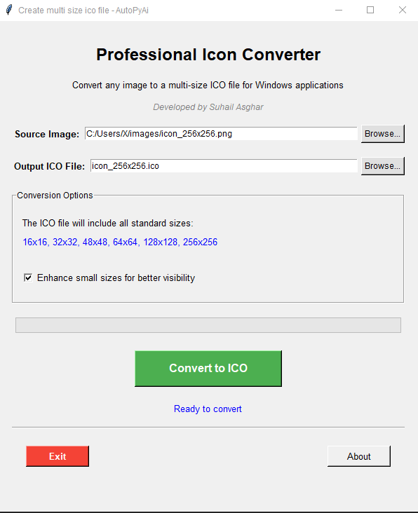

Icon Converter
Turn any image into a perfect Windows .ico file — instantly, offline.
Perfect For:
1- Windows app developers needing .ico files for setup wizards or EXEs.
2- Designers converting logos or artwork into Windows-compatible icons.
3- Students & hobbyists building desktop tools and want professional-looking icons.
4- Anyone who wants to customize folder or shortcut icons without online converters.
Key Features
- Runs locally on your PC — no internet required, no data uploaded. Your images stay secure.
- Enhanced Small Sizes: feature improves clarity of tiny icons (16x16, 32x32) for better visibility in taskbars and menus.
- Browse source image: Set output name → Click “Convert to ICO” → Done. No complex settings.
- Offline & Private: All conversations and exports remain on user's device. User conversations are not stored on external servers.
- Developer-Friendly: Perfect for packaging icons with Python apps, Electron projects, or Windows executables.

*Question & Answer View — Shows user's conversation with kidchat
Ready to Turn Documents Into AI Answers?
One-time payment. Lifetime updates. No subscriptions. Zero cloud dependency.
Buy Now — $49 One-Time